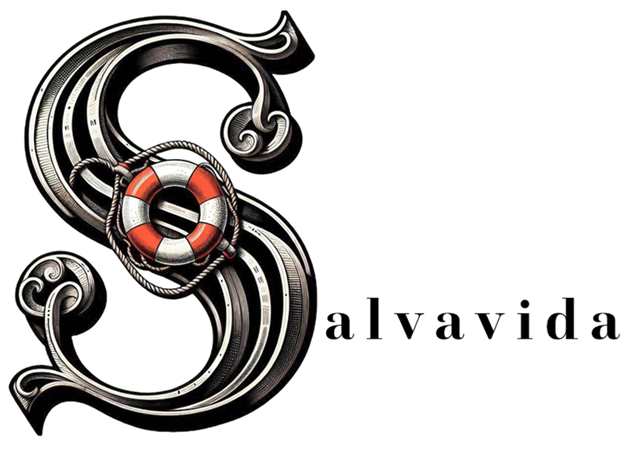
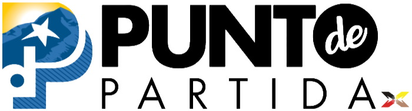

Punto de Partida
Punto de Partida is home to Proyecto Centro Salvavida, El Paso's Comprehensive Opioid Recovery Center.
Walk in as you are and be treated like a person. Our peer staff have lived experience of recovery themselves. Some have overcome alcohol, drugs, homelessness, incarceration, or several of these at once or at different points in their life. They might not have all the answers, but they will meet you where you are.


What Punto de Partida offers
We are a stigma-free environment, and we use a trauma-informed approach. That means we don't start with "what's wrong with you." We ask what you've been through and what you need, and you set the pace. We offer low-barrier peer support.
No ID is required. It helps to have one, but you don't need it to come in.
Basic needs & amenities
- Showers
- Bathrooms
- Laundry
- Clothing closet
- Respite area
- Food
Overdose prevention
Punto de Partida is the Region 10 naloxone (Narcan) resource hub — free naloxone is available to anyone, no questions asked. We also provide overdose response training for individuals, families, and organizations.
Learn about our Region 10 naloxone hubStreet outreach
Our outreach team goes into the community — including unhoused neighbors and encampments — to bring resources, connection, and naloxone to people who may not be able to reach a drop-in center.
Hours & location
Address:
800 Montana Ave, El Paso, TX 79902
Get directions
Phone:
(915) 594-7000 (main)
(915) 262-0002 (drop-in center)
| Service | Mon | Tue–Thu | Fri |
|---|---|---|---|
|
Peer support, recovery coaching, re-entry & outreach (915) 262-0002 |
10:00 a.m.–2:45 p.m. | 8:00 a.m.–2:45 p.m. | 8:00 a.m.–12:00 p.m. |
| Showers and laundry | 10:00 a.m.–2:00 p.m. | 8:00 a.m.–2:00 p.m. | 8:00 a.m.–11:00 a.m. |
| Snack bags | — | 8:00 a.m.–12:00 p.m. | — |
|
Naloxone Hub (915) 300-9521 |
8:00 a.m.–4:00 p.m. | 8:00 a.m.–4:00 p.m. | 8:00 a.m.–4:00 p.m. |
|
Coalition for the Homeless (915) 500-1011 |
8:00 a.m.–11:45 a.m. | 8:00 a.m.–11:45 a.m. | 8:00 a.m.–11:45 a.m. |
|
Texas RioGrande Legal Aid (915) 263-8988 |
— | Thu 9:00 a.m.–11:00 a.m. | — |
| Medication assistance (El Paso County) | 8:00 a.m.–4:00 p.m. | 8:00 a.m.–4:00 p.m. | 8:00 a.m.–4:00 p.m. |
| Medical intakes (Project VIDA) | — | Tue 8:00 a.m.–12:00 p.m. | — |
| Mustard Seed hot plates | — | Wed & Thu 1:00 p.m. | 11:00 a.m. |
|
HIV and syphilis rapid testing (Alliance of Border Collaboratives) |
— | 2nd Tue of month, 9:30–11:30 a.m. | — |
| Bathrooms and wellness supplies | During open hours | ||
| Clothing closet and Uber rides | Ask your coach | ||
Hours can change on holidays. Call (915) 262-0002 before you come.
Free Narcan available
Walk in. No ID required.
Region 10 naloxone resource hub.
We don't do this alone
Organizations across El Paso come to Punto de Partida and beyond to help connect the people we serve with more of what they need. See all our partners and funders →